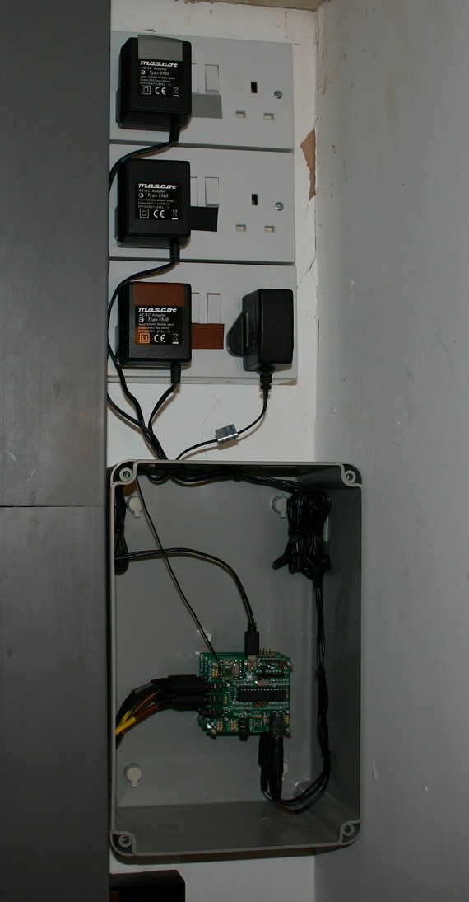
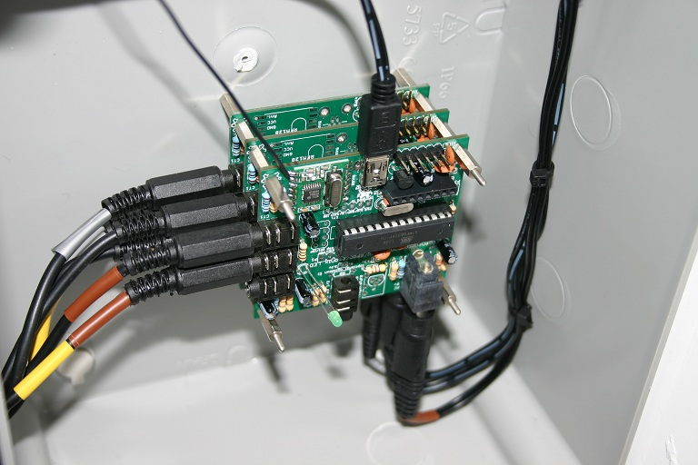
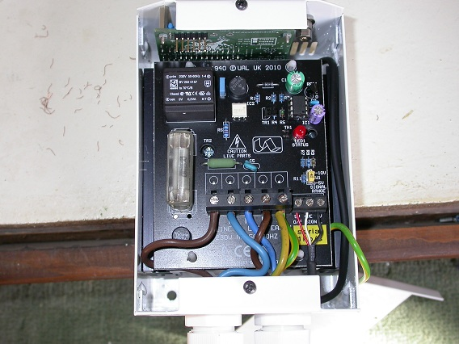
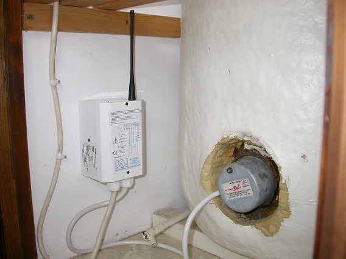

Just got my 3-phase solar PV monitoring up and running...

The transmitter block consists of 3 stacked transmitter boards but only a single RF module...

The 5V power, ground, SDA and SCK signals of the three boards are connected via stackable headers so no wires are required. The top board is the I2C master and it operates as normal, except that just before it starts a sampling cycle it sends a command to each of the slaves to initiate their sampling cycles. When the sampling is complete the master requests the results from the slaves and packages all the data into a single packet for transmission to the display.
Next stage is to divert excess energy into the immersion heater and electric underfloor storage heating - hence the big box!
Re: Full-fat 3-phase monitor
Wow! Great work Martin. Also a very elegant hardware setup. Please could you share your code, I know many users will be interested in how you have implemented this.
Keep up the good work.
All the best,
Re: Full-fat 3-phase monitor
Thanks Glyn. Most of the elegance is due to your thoughtful PCB design. Being able to link the boards via I2C without wires made it a pleasure to build.
Here's the code for the master and slave transmitters...
http://openenergymonitor.org/emon/sites/default/files/emonTx_CT123_Voltage_3phase_Master.ino
http://openenergymonitor.org/emon/sites/default/files/emonTx_CT123_Voltage_3phase_Slave.ino
I've kept the data for the 3 phases separate so I could display them individually but they could easily be combined in the master to work with the standard display code.
-martin
Re: Full-fat 3-phase monitor
That's a very neat build, Martin, much tidier than anything so far of mine! I'll be most interested to see how your project develops on the power diversion front.
My first attempt to divert surplus PV power was based around the standard OEM V&I sketch which measured the power that was flowing at our grid supply point. A professional AC controller (£££) was then periodically adjusted so as to achieve a balance between import and export. That system did work OK but with some significant limitations. Apart from the expense, its response time was poor, and it did not monitor power continuously. The controller also needed an additional power supply, 24Vac for the one I was using.
My Mk2 version has a completely different approach in that the code for measuring and distributing power is combined. Its operation is fully continuous and the response time is nigh on instantaneous. With a simple DIY output stage, the cost is also greatly reduced. What it does not do, however, is to communicate its operational status to any form of display. Several other people have devised ways of adding this kind of facility. Maybe you will be looking to do the same?
With a single-phase supply, the ideal state is when import and export are balanced. In this condition, there is no charge to the user and no energy is lost to the grid. I wonder how this works with a 3-phase setup? If two phases were in perfect balance, but the third was consuming some power, I presume you would be charged. Could that charge be avoided if some export were allowed to occur such that the net flow across all three phases was zero? This would require an interesting balancing act from some master entity, but I feel sure that such a scheme should be possible once the relevant criteria are known.
Re: Full-fat 3-phase monitor
Thanks Robin.
Yes, I’ve been following your thread with a great deal of interest. The video showing the disc-type meter just hunting around the zero position is a great demo of how well it works. You have a very neat solution there, the precise control it offers really appeals to me and I’m definitely going to have a play with a version of it at some point.
In the meantime I have built something similar to your first version using a commercial 3kW controller. At £87+vat it seemed good value as it’s very well made and does include the auxiliary power supply....


As you can see, I managed to squeeze an emontx into the case and a rubber-duck type aerial into a convenient hole in the top. This just listens to the normal transmissions from the monitor to see if there is any spare power on the phase used by the immersion and if there is it turns the heater on just enough to use it. Not ideal but it works reasonably well. The main problem is that the controller won’t go below about 30% power, probably so it can meet the flicker specs. I’ve re-programmed the PIC chip it uses to overcome this but obviously this invalidates the warranty and quite possibly the specs too.
I have been looking into improving the monitoring side as I’m not happy with just peeking at the power every few seconds. At the moment I measure the power continuously for 3 seconds and then transmit the result, but ideally I’d like to monitor the power continuously so I’m looking into doing this with a timer interrupt - although I should probably check out what others have done first.
Interesting point you make about 3-phase metering. I wonder if the meter does use a single “energy bucket” for all 3-phases or if they are treated separately? At the moment I’m just considering it as 3 separate supplies as everything in the house just runs off one of the 3 phases.
Re: Full-fat 3-phase monitor
Thanks for the update, Martin. I see that your standard of workmanship remains in a league above mine!
Having no idea about how a 3-phase inverter operates, is there any chance of posting something here about this? Or maybe you could point me towards the spec for the inverter which your PV system uses.
This sounds to be a most interesting development, and it would be great if my Mk2 code could be adapted for efficient use in a 3-phase environment. But, for now, I can only guess at how these things might work, which is probably not very helpful to anyone.
Re: Full-fat 3-phase monitor
I'm no expert but I don't think there's anything special about 3-phase inverters. They're effectively just 3 inverters in one box with the solar power shared between the 3 outputs. This is the one I have...
http://www.sma.de/en/products/solar-inverter-without-transformer/sunny-tripower-8000tl-10000tl-12000tl-15000tl-17000tl.html#Overview-9516
I'm really curious to know how the meter works now though as it might be possible to transfer power between the phases by leaking it out on one phase and then sucking back on another. If the meter only looks at the total power it will see this as zero nett power.
Re: Full-fat 3-phase monitor
I have two theories about how the meter works. Either or neither could be right:
I've found data on one 3-phase meter that has a starting current of 15 mA (input current 5 A from a c.t.) which is the same value as for the equivalent single-phase version, which makes sense to me.
I would presume it does have a 'energy packet' that could be taken advantage of, but how is it shared over the phases? It would be great if you could repeat Robin's experiments and find out.
Re: Full-fat 3-phase monitor
Interesting work Martin. I'll point Noah in this direction, he's experimenting with three phase dumping at the moment. I was a bit concerned about the proximity of the three 13A sockets with different phases on them I had a nasty experience with two industrial sized photocopiers powered on different phases, the neutral went missing and for some reason the chassis of both went live with me across them, but that was in Poland, where 240V drops to 210V for the first hour of the day when everyone makes their tea!
I was going to ask if that's an economy 7 tank with two heaters so you could use two phases, I'm not sure if that would be legal though
Re: Full-fat 3-phase monitor
Re 13amp sockets. Ithink the rule is that they should be at least 1.5m apart.
I never said a thing.
Keep up the good work.
Re: Full-fat 3-phase monitor
My, that video is grim. Good to know that no parameterizing is required :D
The spec for these inverters at http://www.sma-uk.com/en_UK/products/solar-inverters/sunny-tripower/sunny-tripower-8000tl-10000tl-12000tl-15000tl-17000tl.html doesn't appear to say much about the output, apart from it being three-phase. We really could do with establishing how PV power is distributed across these phases. If, for example, your immersion heater were to be turned fully on, would that reduce the PV power that's being fed to the other two phases?
Do you have a link for the 3-phase meter that you use? By studying its specification, someone may be able to deduce how it works ...
Re: Full-fat 3-phase monitor
mmm, hadn't thought about the dangers of having the sockets close together but I see the point - I guess that's why there are specs! Originally I intended to use DIN rail bell transformers, as they are much neater, but the waveform from all the ones I tried was awful.
They are pretty safe where they are, at ceiling height inside a cupboard, but I would like to obey the rules. Putting the sockets 1.5m apart isn't very practical so if I put the sockets and transformers inside a box would that be acceptable?
It is an Economy 7 tank but I plan to dump any excess power into the electric floor heating, which acts as a storage heater and normally comes on during the Economy 7 period, so there's no real need to power both immersion heaters.
Robin - the meter is an Ampy 5192J
Re: Full-fat 3-phase monitor
They are pretty safe where they are, at ceiling height inside a cupboard, but I would like to obey the rules. Putting the sockets 1.5m apart isn't very practical so if I put the sockets and transformers inside a box would that be acceptable?
They are clearly labelled with the phase colours, they are dedicated to a specific purpose and if you are confident that the sockets will not be used for things like portable tools, then it's hard to see where the danger is. I would certainly not have sockets on different phases in the same room, and especially in a kitchen, utility room or workshop. I tend to view 'rules' as for the obedience of idiots and the guidance of wise men. You could most likely cover yourself with a simple label "These sockets must only be used for Energy Monitor ".
Re: Full-fat 3-phase monitor
There's a spec for the Ampy 5192J meter here, but it won't let me copy or save it :(
Re: Full-fat 3-phase monitor
Strange, I can do either.
Re: Full-fat 3-phase monitor
Safe? Legal? Hey I`m the guy that connected an induction generator direct on line with no synchronisation. In my youth, of course.
Re: Full-fat 3-phase monitor
I have a mate who won't let me forget that he and I once pushed two car batteries together in 69 formation - to see what would happen. With 24V and minimal resistance, there was a sizeable flash, and all four terminals were instantly scorched and mutilated. Needless to say, our Physics teacher was not amused ...
Re: Full-fat 3-phase monitor
You mean there were still terminals? ! ! !
When I was at Uni, a colleague would often tell of the day when in school physics, the teacher told a particular boy (not him - I think!) to measure the impedance of the mains. So the boy picked up an Avo multiminor, set it on ohms - "and remember, it's a.c." - so he swapped the prods over and then stuck them into the mains socket...
Re: Full-fat 3-phase monitor
Did you get the pdf in the end? It downloaded ok for me [attached ; note it's for the 5192B]
Eamonn
Re: Full-fat 3-phase monitor
I won't tell you about a colleague who made a metal desk live when we were training, to 'test' a 30ma ELCB on one of us...... It worked, by the way - what a stupid thing to do!
Re: Full-fat 3-phase monitor
Did you get the pdf in the end? It downloaded ok for me [attached ; note it's for the 5192B]
Thanks. I've always been able to download it, I just couldn't use the Save or Copy commands in Preview on my Mac. That file seems to be well protected, but its contents are visible to all. Sorry for any confusion.
Re: Full-fat 3-phase monitor
Hello Martin!
I've some questions about your system:
1.) Are SDA, SCL, GND and PWR (5V) all the connections that are needed between the EmonTx modules?
2.) Does every EmonTx have its own 3,3V regulator or is there only one on the master-board?
I'm building a system similar to your's, measuring total power consumtion of the house, power consumtion of the heatpump (for hot water and heating the house) and the power of the photovoltaic installation I plan to install in a few years (about 8-8,5kW should be possible on the roof of my house).
I allready got most of the hardware, only some components (3,3V regulator, oscillator and ATmega for the 3rd EmonTX), 2 power supplys and the 6 CTs (orderd in China) are missing.
Re: Full-fat 3-phase monitor
Hi jb79,
1) Yes, SDA,SCL, GND and PWR are all the connections you need. I left the reset pin in place too, mainly because I didn't want to cut any more pins off the headers than I had to, but it isn't required. Obviously if you do go for a single regulator you'll need the 3.3V pin too.
2) I used a 3.3V regulator on each board as I thought it would minimise noise since the 3.3V line is used as the ADC reference. They're cheap enough but the concept would work with a single regulator if you want to go that way.
Good luck with your project, it sounds interesting.
-martin
Re: Full-fat 3-phase monitor
Hello again Martin,
I just installed the scripts on my 3 EmonTx boards and connected them together with the connections I posted 2 days before. The slave boards also share the 3,3V supply because I didn't have the voltage regulator here.
The one with the rf part gets the master script, on the others I installed the slave script (one with address 2, one with address 3).
First it seems to work but it looks like there are some problems. The system isn't running as smooth as I expected.
I often get 65535 values from the middle slave board and sometimes the green leds turn on for some seconds. For me it looks like the boards are performing a lot of reboots.
Did you insert pull up resistors to the I2C bus lines, if yes, what value did you use?
Maybe that causes my problems.
Re: Full-fat 3-phase monitor
I didn't use any extra pullup resistors, the internal weak pullups seem to be enough.
The code I used for the Wire interface is just taken from the examples in the Wire library.
It might be worth trying those to make sure your hardware setup is working ok.
Re: Full-fat 3-phase monitor
hi... i know its has been a few months since last post but i'm monkey'ing arround with this one, have a few q's:
1. in the first post on the pic's each board has 2 jacks connected... is that 2 CS clamps on each phase or? ahould there not be only one?
2. in the code for the master it says:
where do i get that one?
3. I want to add a water meter since it's within 1 meter from my fuse box... its a pulse type (reed switch activated by magnet in meter)... i guess its no problem but could i get a bit of help on that? i have tried to mix together some code here:
/*
EmonTx CT123 + Voltage example
An example sketch for the emontx module for CT only electricity monitoring.
Part of the openenergymonitor.org project
Licence: GNU GPL V3
Authors: Glyn Hudson, Trystan Lea
Builds upon JeeLabs RF12 library and Arduino
emonTx documentation: http://openenergymonitor.org/emon/modules/emontx/
emonTx firmware code explination: http://openenergymonitor.org/emon/modules/emontx/firmware
emonTx calibration instructions: http://openenergymonitor.org/emon/modules/emontx/firmware/calibration
THIS SKETCH REQUIRES:
Libraries in the standard arduino libraries folder:
- JeeLib https://github.com/jcw/jeelib
- EmonLib https://github.com/openenergymonitor/EmonLib.git
Other files in project directory (should appear in the arduino tabs above)
- emontx_lib.ino
Slave control for 3-phase added by Martin Roberts 14/10/12
Pulse counter for Elster m100 Artist water meter by Bo Herrmannsen 16/02/13
*/
#define FVCAL 237 // default is 234.26
#define FICAL 111.5 // default 111.1
#define FPHASE 1 // default 1.7
#define FILTERSETTLETIME 5000 // Time (ms) to allow the filters to settle before sending data
//CT 1 is always enabled
const int CT2 = 1; // Set to 1 to enable CT channel 2
const int CT3 = 0; // Set to 1 to enable CT channel 3
#define freq RF12_433MHZ // Frequency of RF12B module can be RF12_433MHZ, RF12_868MHZ or RF12_915MHZ. You should use the one matching the module you have.433MHZ, RF12_868MHZ or RF12_915MHZ. You should use the one matching the module you have.
const int nodeID = 10; // emonTx RFM12B node ID
const int networkGroup = 210; // emonTx RFM12B wireless network group - needs to be same as emonBase and emonGLCD needs to be same as emonBase and emonGLCD
const int UNO = 1; // Set to 0 if your not using the UNO bootloader (i.e using Duemilanove) - All Atmega's shipped from OpenEnergyMonitor come with Arduino Uno bootloader
#include <avr/wdt.h> // the UNO bootloader
#include <JeeLib.h> // Download JeeLib: http://github.com/jcw/jeelib
ISR(WDT_vect) { Sleepy::watchdogEvent(); }
#include "EmonLib.h"
EnergyMonitor ct1,ct2,ct3; // Create instances for each CT channel
#include <Wire.h>
typedef struct { int power1, power2, power3, Vrms; } PayloadTX; // neat way of packaging data for RF comms
PayloadTX emontx[3];
const int LEDpin = 9; // On-board emonTx LED
boolean settled = false;
//------------------------Water Start----------------------------
long pulseCount = 0;
unsigned long pulseTime,lastTime; // Used to measure time between pulses
double power;
int ppltr = 1; // Pulses per liter
//------------------------Water End------------------------------
Void setup()
{
Serial.begin(9600);
Serial.println("emonTX CT123 Voltage example");
Serial.println("OpenEnergyMonitor.org");
Serial.print("Node: ");
Serial.print(nodeID);
Serial.print(" Freq: ");
if (freq == RF12_433MHZ) Serial.print("433Mhz");
if (freq == RF12_868MHZ) Serial.print("868Mhz");
if (freq == RF12_915MHZ) Serial.print("915Mhz");
Serial.print(" Network: ");
Serial.println(networkGroup);
ct1.voltageTX(FVCAL, FPHASE); // ct.voltageTX(calibration, phase_shift) - make sure to select correct calibration for AC-AC adapter http://openenergymonitor.org/emon/modules/
emontx/firmware/calibration
ct1.currentTX(1, FICAL);1 // Setup emonTX CT channel (channel (1,2 or 3), calibration)
// CT Calibration factor = CT ratio / burden resistance
ct2.voltageTX(FVCAL, FPHASE); // CT Calibration factor = (100A / 0.05A) x 18 Ohms
ct2.currentTX(2, FICAL);
ct3.voltageTX(FVCAL, FPHASE);
ct3.currentTX(3, FICAL);
rf12_initialize(nodeID, freq, networkGroup); // initialize RF
//rf12_control(0xc657);
// approx. 3.918kps, i.e. 10000/29(1+0x57) kps
rf12_sleep(RF12_SLEEP);
Wire.begin(); // join i2c bus (address optional for master)
pinMode(LEDpin, OUTPUT); // Setup indicator LED
digitalWrite(LEDpin, HIGH);
if (UNO) wdt_enable(WDTO_8S); // Enable anti crash (restart) watchdog if UNO bootloader is selected. Watchdog does not work with duemilanove
bootloader // Restarts emonTx if sketch hangs for more than 8s
//------------------------Water Start----------------------------
// pulse detection interrupt (emontx pulse channel - IRQ0 D3)
attachInterrupt(1, onPulse, FALLING);
//------------------------Water End------------------------------
}
void loop()
{
pokeSlave(2); // start slave on phase 2
pokeSlave(3); // start slave on phase 3
ct1.calcVI(20,2000); // Calculate all. No.of crossings, time-out
emontx[0].power1 = ct1.realPower;
Serial.print(emontx[0].power1);
emontx[0].Vrms = ct1.Vrms*100; // AC Mains rms voltage
if (CT2)
{
ct2.calcVI(20,2000); //ct.calcVI(number of crossings to sample, time out (ms) if no waveform is detected)
emontx[0].power2 = ct2.realPower;
Serial.print("\t"); Serial.print(emontx[0].power2);
//Serial.print("\t"); Serial.print(ct2.Irms);
//Serial.print("\t"); Serial.print(ct2.powerFactor);
}
if (CT3)
{
ct3.calcVI(20,2000);
emontx[0].power3 = ct3.realPower;
Serial.print("\t"); Serial.print(emontx[0].power3);
}
Serial.print("\t"); Serial.print(ct1.Vrms);
Serial.println(); delay(100);
// because millis() returns to zero after 50 days !
if (!settled && millis() > FILTERSETTLETIME) settled = true;
if (settled) // send data only after filters have settled
{
readSlave(2); // get data for phase 2
readSlave(3); // get data for phase 3
delay(100); // send_rf_data corrupts any pending Serial.prints so wait until they finish - need to find out why
send_rf_data(); // *SEND RF DATA* - see emontx_lib
digitalWrite(LEDpin, HIGH); delay(2); digitalWrite(LEDpin, LOW); // flash LED
emontx_sleep(5); // sleep or delay in seconds - see emontx_lib
}
else if (UNO) wdt_reset();
//------------------------Water Start----------------------------
Serial.print(Water);
Serial.print(' ');
Serial.print(Liter);
Serial.println(pulseCount * ppltr); // Liters used
delay(1000);
//------------------------Water End------------------------------
}
//------------------------Water Start----------------------------
//The interrupt routine – runs each time a falling edge of a pulse is detected
void onPulse()
{
lastTime = pulseTime;
pulseTime = micros();
pulseCount++; // count pulse
power = int((3600000000.0 / (pulseTime - lastTime))/ppltr); // calculate water
}
//------------------------Water End------------------------------
void pokeSlave(byte phase)
{
//Serial.print("Poking slave ");
//Serial.println(phase,DEC);
Wire.beginTransmission(phase); // transmit to device slave
Wire.write(0x5a); // send any data
Wire.endTransmission(); // stop transmitting
}
void readSlave(byte phase)
{
byte *p;
int i;
if((phase<2)||(phase>3)) return;
p=(byte *)(&emontx[phase-1]);
//Serial.print("Reading from slave ");
//Serial.println(phase,DEC);
Wire.requestFrom(phase, sizeof emontx[0]); // request data from slave device
i=0;
while(Wire.available()) // slave may send less than requested
{
p[i++] = Wire.read();
}
}
4. I also have a heat meter next to the water meter, it has an optical port... my knowledge on the emontx are very limited but does it have enough unused pins on the chip so that 1 serial port can be added? the hardware is very simple for the optical port.. 1 IR LED to send and one IR Receiver look at this pic
Led 4 is the reciver...
4.5: i have the complete arduino code to read the heat meter... but would anybody help me integrate it? As far i know it it build to send the data to serial port. The code is here:
#include <SoftwareSerial.h>
#include <OneWire.h>
// Kamstrup Multical 601
word const kregnums[] = { 0x003C,0x0050,0x0056,0x0057,0x0059,0x004a,0x0044,0x0045 };
char* kregstrings[] = { "Energy","Current Power","Temperature t1","Temperature t2","Temperature diff", "Flow", "Volumen 1", "Volumen 2" };
#define NUMREGS 8
#define KAMBAUD 1200
// Units
char* units[65] = {"","Wh","kWh","MWh","GWh","j","kj","Mj",
"Gj","Cal","kCal","Mcal","Gcal","varh","kvarh","Mvarh","Gvarh",
"VAh","kVAh","MVAh","GVAh","kW","kW","MW","GW","kvar","kvar","Mvar",
"Gvar","VA","kVA","MVA","GVA","V","A","kV","kA","C","K","l","m3",
"l/h","m3/h","m3xC","ton","ton/h","h","hh:mm:ss","yy:mm:dd","yyyy:mm:dd",
"mm:dd","","bar","RTC","ASCII","m3 x 10","ton x 10","GJ x 10","minutes","Bitfield",
"s","ms","days","RTC-Q","Datetime"};
// Pin definitions
#define PIN_1WIRE 4 // 1-Wire bus
#define PIN_KAMSER_RX 6 // Kamstrup IR interface RX
#define PIN_KAMSER_TX 7 // Kamstrup IR interface TX
#define PIN_DIAG_LED 13 // Diag LED to blink with for fun
// Kamstrup optical IR serial
#define KAMTIMEOUT 2000 // Kamstrup timeout after transmit
#define POLLINTERVAL 300000 // Polling interval
SoftwareSerial kamSer(PIN_KAMSER_RX, PIN_KAMSER_TX, true); // Initialize serial
// 1-wire
byte ts_t[] = {0x28,0x14,0xA9,0xAA,0x03,0x00,0x00,0x0F}; // Indoor temperature
OneWire ds(PIN_1WIRE); // Initialize 1-Wire
// last poll variable
long lastpoll;
void setup() {
// setup pins
pinMode(PIN_DIAG_LED,OUTPUT);
pinMode(PIN_KAMSER_RX,INPUT);
pinMode(PIN_KAMSER_TX,OUTPUT);
// initialize kamstrup serial interface
kamSer.begin(KAMBAUD);
// initialize serial interface (connected to linksys router)
Serial.begin(9600);
// initialize lastpoll value
lastpoll = 0;
}
void loop() {
// check if it is time to do a poll
if(millis() - lastpoll > POLLINTERVAL or lastpoll == 0) {
// get Kamstrup data from meter
for (int kreg = 0; kreg < NUMREGS; kreg++) {
kamReadReg(kreg);
delay(100);
}
// get 1-wire temps
String t = gettemp_ds18b20(ts_t);
Serial.print(t);
// send a newline to have linksys process the data
Serial.println("");
// update lastpoll
lastpoll = millis();
}
// toggle LED to show we are alive
togglePin(PIN_DIAG_LED);
// loop delay
delay(500);
};
// Toggle pin
void togglePin(int pinNum) {
digitalWrite(pinNum, !digitalRead(pinNum));
}
// get temperature reading from 1wire sensor
String gettemp_ds18b20(byte addr[8]) {
byte i;
byte present = 0;
byte data[12];
int HighByte, LowByte, TReading, SignBit, Tc_100, Whole, Fract;
String value = "";
ds.reset();
ds.select(addr);
ds.write(0x44,1);
delay(1000);
present = ds.reset();
ds.select(addr);
ds.write(0xBE); // Read Scratchpad
for ( i = 0; i < 2; i++) { // we need 2 bytes
data[i] = ds.read();
}
// Convert to degrees celsius
LowByte = data[0];
HighByte = data[1];
TReading = (HighByte << 8) + LowByte;
SignBit = TReading & 0x8000; // test most sig bit
if (SignBit) // negative
{
TReading = (TReading ^ 0xffff) + 1; // 2's comp
}
Tc_100 = (6 * TReading) + TReading / 4; // multiply by (100 * 0.0625) or 6.25
Whole = Tc_100 / 100; // separate off the whole and fractional portions
Fract = Tc_100 % 100;
if (SignBit) // If its negative
{
value = "-";
}
value += Whole;
value += ".";
if (Fract < 10)
{
value += "0";
}
value += Fract;
return value;
}
// kamReadReg - read a Kamstrup register
void kamReadReg(unsigned short kreg) {
byte recvmsg[30]; // buffer of bytes to hold the received data
float rval; // this will hold the final value
// prepare message to send and send it
byte sendmsg[] = { 0x3f, 0x10, 0x01, (kregnums[kreg] >> 8), (kregnums[kreg] & 0xff) };
kamSend(sendmsg, 5);
// listen if we get an answer
unsigned short rxnum = kamReceive(recvmsg);
// check if number of received bytes > 0
if(rxnum != 0){
// decode the received message
rval = kamDecode(kreg,recvmsg);
// print out received value to terminal
if (rval != false) {
Serial.print(rval);
}
}
Serial.print(",");
}
// kamSend - send data to Kamstrup meter
void kamSend(byte const *msg, int msgsize) {
// append checksum bytes to message
byte newmsg[msgsize+2];
for (int i = 0; i < msgsize; i++) { newmsg[i] = msg[i]; }
newmsg[msgsize++] = 0x00;
newmsg[msgsize++] = 0x00;
int c = crc_1021(newmsg, msgsize);
newmsg[msgsize-2] = (c >> 8);
newmsg[msgsize-1] = c & 0xff;
// build final transmit message - escape various bytes
byte txmsg[20] = { 0x80 }; // prefix
int txsize = 1;
for (int i = 0; i < msgsize; i++) {
if (newmsg[i] == 0x06 or newmsg[i] == 0x0d or newmsg[i] == 0x1b or newmsg[i] == 0x40 or newmsg[i] == 0x80) {
txmsg[txsize++] = 0x1b;
txmsg[txsize++] = newmsg[i] ^ 0xff;
} else {
txmsg[txsize++] = newmsg[i];
}
}
txmsg[txsize++] = 0x0d; // EOF
// send to serial interface
for (int x = 0; x < txsize; x++) {
kamSer.write(txmsg[x]);
}
}
// kamReceive - receive bytes from Kamstrup meter
unsigned short kamReceive(byte recvmsg[]) {
byte rxdata[50]; // buffer to hold received data
unsigned long rxindex = 0;
unsigned long starttime = millis();
kamSer.flush(); // flush serial buffer - might contain noise
byte r;
// loop until EOL received or timeout
while(r != 0x0d){
// handle rx timeout
if(millis()-starttime > KAMTIMEOUT) {
return 0;
}
// handle incoming data
if (kamSer.available()) {
// receive byte
r = kamSer.read();
if(r != 0x40) { // don't append if we see the start marker
// append data
rxdata[rxindex] = r;
rxindex++;
}
}
}
// remove escape markers from received data
unsigned short j = 0;
for (unsigned short i = 0; i < rxindex -1; i++) {
if (rxdata[i] == 0x1b) {
byte v = rxdata[i+1] ^ 0xff;
if (v != 0x06 and v != 0x0d and v != 0x1b and v != 0x40 and v != 0x80){
Serial.print("Missing escape ");
Serial.println(v,HEX);
}
recvmsg[j] = v;
i++; // skip
} else {
recvmsg[j] = rxdata[i];
}
j++;
}
// check CRC
if (crc_1021(recvmsg,j)) {
Serial.println("CRC error: ");
return 0;
}
return j;
}
// kamDecode - decodes received data
float kamDecode(unsigned short const kreg, byte const *msg) {
// skip if message is not valid
if (msg[0] != 0x3f or msg[1] != 0x10) {
return false;
}
if (msg[2] != (kregnums[kreg] >> 8) or msg[3] != (kregnums[kreg] & 0xff)) {
return false;
}
// decode the mantissa
long x = 0;
for (int i = 0; i < msg[5]; i++) {
x <<= 8;
x |= msg[i + 7];
}
// decode the exponent
int i = msg[6] & 0x3f;
if (msg[6] & 0x40) {
i = -i;
};
float ifl = pow(10,i);
if (msg[6] & 0x80) {
ifl = -ifl;
}
// return final value
return (float )(x * ifl);
}
// crc_1021 - calculate crc16
long crc_1021(byte const *inmsg, unsigned int len){
long creg = 0x0000;
for(unsigned int i = 0; i < len; i++) {
int mask = 0x80;
while(mask > 0) {
creg <<= 1;
if (inmsg[i] & mask){
creg |= 1;
}
mask>>=1;
if (creg & 0x10000) {
creg &= 0xffff;
creg ^= 0x1021;
}
}
}
return creg;
}
Re: Full-fat 3-phase monitor
tried to compile and got a few errors... have an idea its a simple thing:
In file included from sketch_feb16b.cpp:58:
/Applications/Arduino101.app/Contents/Resources/Java/libraries/JeeLib/JeeLib.h:9: error: stray '\302' in program
/Applications/Arduino101.app/Contents/Resources/Java/libraries/JeeLib/JeeLib.h:9: error: stray '\267' in program
/Applications/Arduino101.app/Contents/Resources/Java/libraries/JeeLib/JeeLib.h:9: error: stray '\302' in program
/Applications/Arduino101.app/Contents/Resources/Java/libraries/JeeLib/JeeLib.h:9: error: stray '\267' in program
In file included from sketch_feb16b.cpp:58:
/Applications/Arduino101.app/Contents/Resources/Java/libraries/JeeLib/JeeLib.h:252:46: error: invalid suffix "dc3202e9bd6dee29fbfadea040f592d" on integer constant
/Applications/Arduino101.app/Contents/Resources/Java/libraries/JeeLib/JeeLib.h:253:62: error: invalid suffix "dc3202e9bd6dee29fbfadea040f592d" on integer constant
/Applications/Arduino101.app/Contents/Resources/Java/libraries/JeeLib/JeeLib.h:442: error: stray '#' in program
In file included from sketch_feb16b.cpp:62:
/Applications/Arduino101.app/Contents/Resources/Java/libraries/EmonLib/EmonLib.h:9: error: stray '\302' in program
/Applications/Arduino101.app/Contents/Resources/Java/libraries/EmonLib/EmonLib.h:9: error: stray '\267' in program
/Applications/Arduino101.app/Contents/Resources/Java/libraries/EmonLib/EmonLib.h:9: error: stray '\302' in program
/Applications/Arduino101.app/Contents/Resources/Java/libraries/EmonLib/EmonLib.h:9: error: stray '\267' in program
In file included from sketch_feb16b.cpp:62:
/Applications/Arduino101.app/Contents/Resources/Java/libraries/EmonLib/EmonLib.h:248:46: error: invalid suffix "c7fa71f1de8d7c8a35f1c2056c669ff" on integer constant
/Applications/Arduino101.app/Contents/Resources/Java/libraries/EmonLib/EmonLib.h:249:62: error: invalid suffix "c7fa71f1de8d7c8a35f1c2056c669ff" on integer constant
/Applications/Arduino101.app/Contents/Resources/Java/libraries/EmonLib/EmonLib.h:270: error: stray '\342' in program
/Applications/Arduino101.app/Contents/Resources/Java/libraries/EmonLib/EmonLib.h:270: error: stray '\200' in program
/Applications/Arduino101.app/Contents/Resources/Java/libraries/EmonLib/EmonLib.h:270: error: stray '\246' in program
/Applications/Arduino101.app/Contents/Resources/Java/libraries/EmonLib/EmonLib.h:391: error: stray '#' in program
/Applications/Arduino101.app/Contents/Resources/Java/libraries/EmonLib/EmonLib.h:391: error: stray '#' in program
/Applications/Arduino101.app/Contents/Resources/Java/libraries/EmonLib/EmonLib.h:391: error: stray '#' in program
/Applications/Arduino101.app/Contents/Resources/Java/libraries/EmonLib/EmonLib.h:391: error: stray '#' in program
/Applications/Arduino101.app/Contents/Resources/Java/libraries/EmonLib/EmonLib.h:391: error: stray '#' in program
/Applications/Arduino101.app/Contents/Resources/Java/libraries/EmonLib/EmonLib.h:391: error: stray '#' in program
/Applications/Arduino101.app/Contents/Resources/Java/libraries/EmonLib/EmonLib.h:391: error: stray '#' in program
/Applications/Arduino101.app/Contents/Resources/Java/libraries/EmonLib/EmonLib.h:489: error: stray '#' in program
sketch_feb16b:33: error: 'Void' does not name a type
In file included from sketch_feb16b.cpp:58:
/Applications/Arduino101.app/Contents/Resources/Java/libraries/JeeLib/JeeLib.h:4: error: expected unqualified-id before '<' token
/Applications/Arduino101.app/Contents/Resources/Java/libraries/JeeLib/JeeLib.h:389: error: expected constructor, destructor, or type conversion before '<' token
/Applications/Arduino101.app/Contents/Resources/Java/libraries/JeeLib/JeeLib.h:421: error: expected constructor, destructor, or type conversion before '<' token
/Applications/Arduino101.app/Contents/Resources/Java/libraries/JeeLib/JeeLib.h:423: error: expected constructor, destructor, or type conversion before '<' token
/Applications/Arduino101.app/Contents/Resources/Java/libraries/JeeLib/JeeLib.h:430: error: expected unqualified-id before numeric constant
sketch_feb16b.cpp: In function 'void __vector_12()':
sketch_feb16b:53: error: 'Sleepy' has not been declared
In file included from sketch_feb16b.cpp:62:
/Applications/Arduino101.app/Contents/Resources/Java/libraries/EmonLib/EmonLib.h: At global scope:
/Applications/Arduino101.app/Contents/Resources/Java/libraries/EmonLib/EmonLib.h:4: error: expected unqualified-id before '<' token
/Applications/Arduino101.app/Contents/Resources/Java/libraries/EmonLib/EmonLib.h:391: error: expected constructor, destructor, or type conversion before ';' token
/Applications/Arduino101.app/Contents/Resources/Java/libraries/EmonLib/EmonLib.h:391: error: expected unqualified-id before numeric constant
/Applications/Arduino101.app/Contents/Resources/Java/libraries/EmonLib/EmonLib.h:391: error: expected unqualified-id before '=' token
/Applications/Arduino101.app/Contents/Resources/Java/libraries/EmonLib/EmonLib.h:391: error: expected constructor, destructor, or type conversion before '.' token
/Applications/Arduino101.app/Contents/Resources/Java/libraries/EmonLib/EmonLib.h:391: error: expected unqualified-id before '<' token
/Applications/Arduino101.app/Contents/Resources/Java/libraries/EmonLib/EmonLib.h:391: error: expected constructor, destructor, or type conversion before '.' token
/Applications/Arduino101.app/Contents/Resources/Java/libraries/EmonLib/EmonLib.h:391: error: expected unqualified-id before '<' token
Re: Full-fat 3-phase monitor
The newbie "screwed up" a bit... did crossposting and did not attach big files as attactment...
Only Q's left for here is why 2 jacks on each board...
The rest goes in my first thread: http://openenergymonitor.org/emon/node/1974
Re: Full-fat 3-phase monitor
There are 2 CTs, and therefore 2 jacks used, for each phase because this is a solar PV setup. One CT measures the house supply current and the other measures the PV output.
Re: Full-fat 3-phase monitor
dooh... of course...
i assume that i can use the code as it is now and just use one CT... but which one is for the house supply?
Re: Full-fat 3-phase monitor
btw...
in your sketch i read this:
Other files in project directory (should appear in the arduino tabs above)
- emontx_lib.ino
where do i get emontx_lib.ino ?
Re: Full-fat 3-phase monitor
If I were looking an emonTx library file, I think would start here:
http://openenergymonitor.org/emon/emontx
and follow the Firmware link at the bottom of the page ...
Re: Full-fat 3-phase monitor
tried that... it was not here: https://github.com/openenergymonitor/EmonLib
here i found lots of them: https://github.com/openenergymonitor/emonTxFirmware
but which one is the correct one to use? there are a bit differnt it seems
Re: Full-fat 3-phase monitor
its not a library file as such in think... the file i miss ends in .ino and under firmware i find a lot...
EDIT: just counted 6 copies of the file in the zip...
EDIT2: what jack are the in house supply?
Re: Full-fat 3-phase monitor
Not having used this code myself, I don't know how everything is set up, but:
- are you sure that the name of the file you're looking for is correct?
- what is the problem that you're seeing when trying to compile the code that you wish to use?
- have you been able to compile the standard emonTx firmware?
Re: Full-fat 3-phase monitor
This is the emontx_lib file I used originally. It's the one that came in the standard emonTx_CT123_Voltage folder in the emonTx firmware package. There's hardly anything in the file.
The CT1 jack is usually used for the house supply but they are both treated the same by the firmware. You just need to make sure that whatever you are using to receive the transmissions is using the data from the correct CT input.
As calypso_rae said, you should probably make sure the original files compile without problems before you start making changes.
Re: Full-fat 3-phase monitor
btw.... trying to understand the GLCD.... are you just using the standard examples or have you tweaked the code to display the different phases?
i would love to display then seperate but also an option to display combined would be nice
Re: Full-fat 3-phase monitor
Hey Martin.
Newbie here and very intrigued by your project.
I wonder if I could use that as well as a power analyzer. ( a 3 phase Fluke costs well over 3000 euro)
I need to measure house mains power for fluctuations. Mostly 3 phase + neutral.
Voltage, not current.
thanks, Permeke
Re: Full-fat 3-phase monitor
I am sure you could, but it does depend on what you expect. You are unlikely to be able to have real time harmonic analysis, for example, and while you should be able to capture one cycle of waveform for later analysis, the resolution (number of samples) will be less than the professional instrument, and of course without access to other highly accurate meters for calibration, the accuracy will be significantly lower too.
However, you will still have a useful tool that should help with diagnosing power problems in general. If you only want to see and record voltage fluctuations (and you are not too concerned with absolute accuracy), then you should have absolutely no difficulty. In fact, if all you want to do is record voltage fluctuations, you might not need 3 processors - it will be worth doing the maths regarding performance.
Re: Full-fat 3-phase monitor
Hi Martin,
Thank you for sharing your project, I've just enroled in OpenEnergyMonitor so pardon my n00b Q's
I'm looking for a way to measure the same and use the divert excess energy ( or better say the energy left to use on my grid) for charging an electric car.
Q: Could anyone help me out with this beginners question, the "stacking" of these boards is that just as simple of adding the Stackable Header on the (correct place? which is?) on the boards and then push them together ?
Is there any information what size stackable header and where to place them on the boards?
Many thanks in advance,
Wxll
Re: Full-fat 3-phase monitor
Does this, the 3rd sentence in the top post, not tell you: "The 5V power, ground, SDA and SCK signals of the three boards are connected via stackable headers so no wires are required."
You can identify these from the pcb layout and schematic on solderpad, or just look at the silk screen if you have a board. (The 5 V is labelled "PWR")
Re: Full-fat 3-phase monitor
Thanks!,
I saw that 3rd sentence however that did not make me feel that confident it was that simple, just connect up and switch on the power. The whole concept or stackable headers is new to me, like a Q in my head "can you really pile up all the boards?", especially as data seems to go bidirectional as I understand from your posting on one wire and not like a serial cable. Just getting into this and did not work with any of these hardware lnks like the I2C lbefore.
I found the pins on the pictures :-)
Thanks for the confirmation that helped to get me started.
Wxll
Re: Full-fat 3-phase monitor
Many multi-drop bus systems work that way. There is often (not always) one "controller" that initiates proceedings, either by issuing a command to one or more slaves or requesting data from one named slave, then the slave that's been addressed responds. Each device usually listens before transmitting, and in many cases they also listen as they transmit so are capable of recognising a conflict on the bus (two transmitting at once) and can react accordingly.
There's plenty on the I2C bus that Google will find for you.
Re: Full-fat 3-phase monitor
Martin,
This may seem a really dumb question but where did you get your standoffs from? I can't find any with a small enough thread size to go through the holes..
Re: Full-fat 3-phase monitor
There are some hints in this thread:
http://openenergymonitor.org/emon/node/2407
I just bought some nylon standoffs from the ebay seller linked in that thread ... price isn't cheap but much better than local stores ... my usual online seller doesn't stock them. M3 stuff is the smaller size they have. You want M2 standoffs
Re: Full-fat 3-phase monitor
Thanks, good old eBay again!
(I do seem to have problems with items from Hong Kong etc not getting to me, though PayPal are normally good at giving refunds).
Re: Full-fat 3-phase monitor
The ones in the photo came from Atomic Engineering in the UK. The part number is BS-L12-TA-M2 (so 12mm long).
They have a minimum order of 100 though so you might be better of with the eBay ones. It might be a good idea for the shop to get a bunch in stock and offer them as an optional extra?
Re: Full-fat 3-phase monitor
Thanks Martin.
I'm struggling with your code a bit, I'm new to sketches and can't find anything to explain this.
In your master you have;
typedef struct { int power1, power2, power3, Vrms; } PayloadTX; // neat way of packaging data for RF comms
PayloadTX emontx[3];
Does this mean 1 packet is sent with 3 parts, first the data for phase 1, then phase 2 and finally phase 3?
I've been trying to receive the data with;
https://github.com/openenergymonitor/RFM12B_Simple/tree/master/Rx_Simple...
and all I can get is phase 1. I've tried different ways to modify it but I can't find any info on how to get the data for phases 2 and 3.
Re: Full-fat 3-phase monitor
Here, emontx is an array of structs. That means the 3 sets of values for the 3 phases are stored in memory sequentially. This is all standard 'C' language.
The rf library sends the one variable emontx as a continuous sequence of 24 bytes (2 bytes per integer x 4 integers per struct x 3 structs in the array).
The Rx_SimpleRFM12B_demo has the "standard" struct for the data and it reads only that. If you modify emontx in the receiving sketch to be the same as the sending end (as you quoted above), then you can access the 3 array elements, like "phase3_Grid=emontx[2].power1". Read up on how the data is transferred here.
Re: Full-fat 3-phase monitor
Thanks Robert,
I was looking at that link but now you've pointed me in the right direction with the structure it makes much more sense.
Thanks
Re: Full-fat 3-phase monitor
Is there any diversion projects going on with this stacked solution?
Re: Full-fat 3-phase monitor
+1 on that Zakke.
I've the single version working now, and probably extend it to the stacked version later on.
Wxll
Re: Full-fat 3-phase monitor
M2 nylon screws & nuts are available at http://cgi.ebay.co.uk/ws/eBayISAPI.dll?ViewItem&item=181156721645&ssPageName=ADME:L:OC:GB:3160
M2 spacers are not available from this source, but an M3 threaded spacer such as http://spiratronics.com/product-40357.html works nicely; its bore is just right for the M2 threaded screw to pass through.
(photo to follow, my disk quota on the forum has apparently been exceeded ...)
Re: Full-fat 3-phase monitor
have anyone made a 3d printed case for the stacked build?
Re: Full-fat 3-phase monitor
I'm glad I found this thread. My ideal setup would involve monitoring all the individual circuits in my panel in addition to the main panel input so stacking is very appealing. Do you know if the stacking could also be done with the emontx arduino shield? Is that why it is sold with stackable headers in the shop?
Thanks
-mjf
Re: Full-fat 3-phase monitor
I think you can not stack several shields - the analogue inputs on each shield would all be on the same pins on the Arduino PCB.
The stacked emonTx V2's work because stacking connects power supplies and the serial one-wire interface. It should be possible to interconnect emonTx V3's similarly but the physical stacking and interconnection arrangements need to be different.
Re: Full-fat 3-phase monitor
I am interested in something similar to monitor all of the circuits in my fuseboard. As these are EmonTx v2, is there a direct replacement to achieve what's pictured in Martins original post?
Was looking at the emonTx Arduino Shield and stacking, but I don't think its going to be possible.
Regards
Dave
Re: Full-fat 3-phase monitor
It's definitely not possible to achieve this by stacking EmonTx Shields, you would need to stack pairs of Arduino plus Shield.